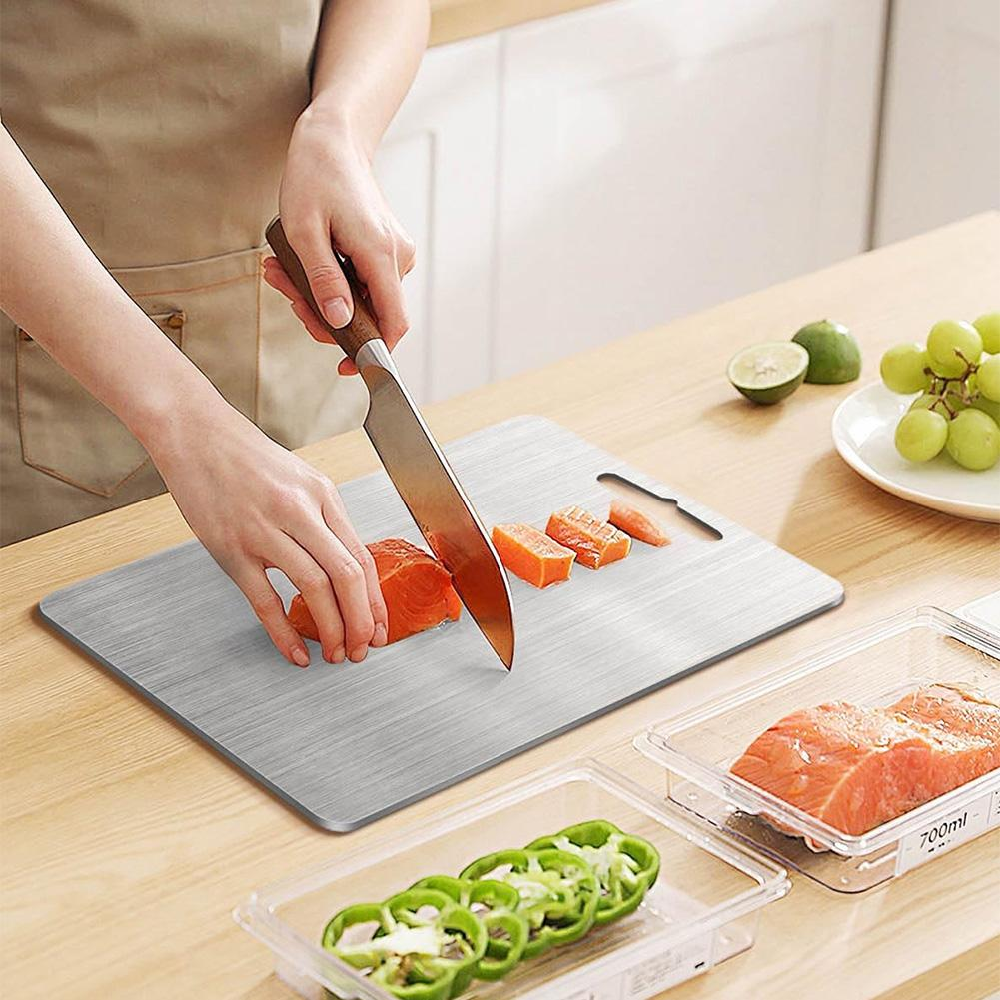

4.8 Star Average Rating
30-Day Risk-Free Trial
Free Shipping on Orders Over $50
Food-Grade 304 Stainless Steel
Dishwasher Safe
4.8 Star Average Rating
30-Day Risk-Free Trial
Free Shipping on Orders Over $50
Food-Grade 304 Stainless Steel
Dishwasher Safe
01
Hygiene Risk
YOUR BOARD IS HARBORING BACTERIA YOU CAN'T SEE
Every knife cut in a wooden or plastic board creates micro-grooves. These grooves trap raw meat juices, onion residue, and mold spores that soap and hot water can't reach. You rinse it — it looks clean. Bacteria stay. That's not a cleaning problem. That's a material problem.
The Fix
NON-POROUS STEEL LEAVES BACTERIA NOWHERE TO HIDE
The KURA Board is made from food-grade 304 stainless steel — the same material used in surgical equipment and professional kitchens. Its non-porous surface has no grooves to trap bacteria. A quick rinse genuinely cleans it. Dishwasher safe for a full sanitize cycle whenever you need it.
Wooden boards swell and warp when they get wet. Plastic boards crack under heat and stain brown after the first raw chicken. Either way, you're back on Amazon inside a year. The "cheap" board becomes the expensive one the moment you factor in how often you replace it.
The Fix
THE KURA BOARD IS BUILT TO LAST A LIFETIME
Stainless steel doesn't warp. It doesn't crack. It doesn't absorb stains. The KURA Board handles boiling water, daily dishwasher cycles, and heavy use without changing shape, surface quality, or performance — year after year. Buy it once. Done.
Most kitchens use one board for raw chicken, vegetables, and bread — washing between uses and hoping for the best. The problem is wooden boards retain raw meat odors and juices in their grain even after a thorough scrub. You're cross-contaminating your food without knowing it.
The Fix
KURA CLEANS CLEAN BETWEEN EVERY INGREDIENT
Because the KURA Board is non-porous, a quick hot rinse between ingredients is genuinely enough. No lingering odors. No invisible residue. No waiting. The surface you see is the surface you get — clean every time you put a knife on it.
YOUR BOARD IS DULLING YOUR KNIVES WITHOUT YOU REALIZING IT
Rough wood grain and hard plastic both drag against your blade with every single cut. You sharpen your knives. Then you set them on a surface that immediately starts undoing the work. It's a cycle most cooks never think to break — because they don't know what's causing it.
The Fix
A SMOOTH SURFACE THAT KEEPS YOUR KNIVES SHARPER, LONGER
The KURA Board's brushed steel surface has a consistent, low-drag grain that reduces wear on your blade edge. Your cuts are cleaner. Your knives stay sharper between sessions. It's a benefit most people only notice the first time they go back to their old board.
YOU'VE ALREADY SPENT MORE ON CHEAP BOARDS THAN ONE GOOD ONE COSTS
A $15 plastic board that gets replaced every eight months costs you over $100 across five years — and delivers an inferior experience every day it's in your kitchen. The math only works in favor of cheap if you never replace it. You always replace it.
The Fix
ONE KURA BOARD. PAID FOR ITSELF WITHIN THE FIRST YEAR.
At $48, the KURA Board costs less than three cheap replacements — and delivers a better cooking experience from day one. No annual replacements. No degrading plastic. No swollen wood. This isn't an upgrade. It's the last cutting board decision you make.
"I didn't realize how dirty my old board was until I switched."
I was washing my wooden board twice after every raw chicken session. It still smelled like onion a week later. First week with KURA — no smell, no residue. It just cleans. Completely changed how I feel about my kitchen.
Durability Fixed
Michael T. — Chicago, IL
Verified Buyer
"Four years in and it still looks brand new."
Bought this when we renovated the kitchen. Thousands of meals and daily dishwasher cycles later — not a warp, not a stain, not a crack. My old boards never survived a year. This one is permanent.
Value Fixed

Jasmine K. — Portland, OR
Verified Buyer
"Thought $48 was a lot. Laughing at myself now."
I replaced two plastic boards in the year before I bought the KURA Board. Did the math — I'd already spent more. This is cleaner, sharper, and easier to use than anything I've owned. Should have done this years ago.
30-DAY RISK-FREE GUARANTEE
Try the KURA Board in your kitchen for 30 days. If it's not the best cutting board you've ever used — cleaner, more durable, better in every way — return it for a full refund. No forms. No fuss.
No. The brushed steel surface is smooth enough to preserve your blade edge. Many customers report their knives staying sharper longer between sessions — because there's less drag per cut compared to rough wood grain or hard plastic.
The KURA Board is made from food-grade 304 stainless steel — the same grade used in surgical instruments and commercial kitchen equipment. It is fully rust-resistant and will not corrode with regular use and washing, including dishwasher cycles.
We recommend using it with a damp kitchen towel or non-slip mat underneath — the board itself has good weight and stability. On smooth countertops, any board without rubber feet can shift slightly under pressure, so a grip pad takes care of that completely.
Yes. The KURA Board goes into the dishwasher on any standard cycle. Dishwasher heat actually provides an extra sanitization step that wooden boards can never handle — wood warps and splits at dishwasher temperatures. Stainless steel does not.
Return it within 30 days for a full refund — no questions, no forms. We stand behind the product because the product stands up. We have had very few returns.